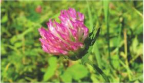
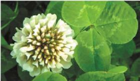
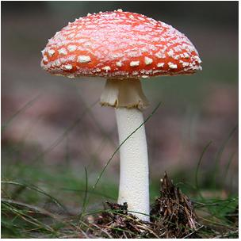
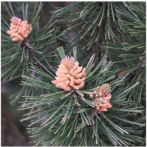
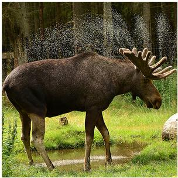
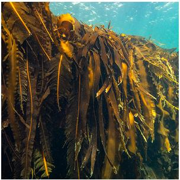
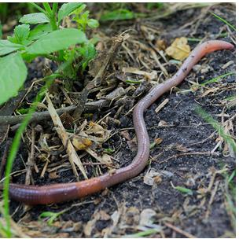
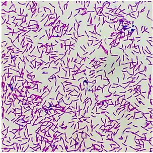
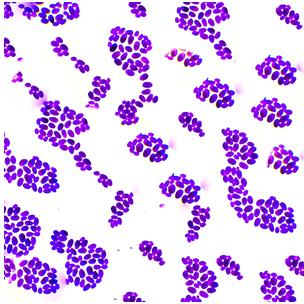

Многообразие организмов
Вспомните: Что такое органический мир? Какие признаки живых организмов вам известны?
Нашу планету населяет невероятное количество живых существ. На сегодняшний день учёными описано свыше 2,5 миллионов видов организмов (из них около 100 тысяч — это грибы). Но это далеко не всё! По оценкам биологов, на Земле может существовать от 3 до 7 миллионов видов, которые ещё только предстоит открыть.
Органический мир — это совокупность всех живых организмов, населяющих Землю.
Наука Систематика
Как не запутаться в огромном многообразии живых существ? На помощь приходит специальная наука.
Систематика — наука о многообразии и классификации организмов. Она объединяет существ в группы на основе их родства.
Основоположник науки
Становление систематики связано с именем шведского учёного Карла Линнея (1707–1778). Он ввёл латинские названия для всех организмов и предложил использовать двойные (бинарные) названия.
Первое слово в названии — это Род (существительное), а второе — Вид (прилагательное).

а) Клевер средний
(Trifolium medium)

б) Клевер ползучий
(Trifolium repens)
Соподчинение систематических групп
Каждый организм принадлежит к определённым группам (категориям). Рассмотрите иерархию от самой крупной группы к самой мелкой на примере Растений. Нажимайте на карточки, чтобы увидеть соподчинение:
Кликните по любой строчке схемы выше, чтобы узнать подробнее о систематической категории.
Современная классификация
В XX веке учёные разделили весь органический мир на две огромные группы (Империи/Надцарства): Доядерные (Прокариоты) и Ядерные (Эукариоты).
Рис. 3. Схема классификации основных групп организмов
Вирусы стоят особняком — это неклеточная форма жизни, они не входят ни в одно надцарство.
Проверим знания?
Интерактивный практикум
Задание: Рассмотрите изображения организмов. Из выпадающего списка под каждой картинкой выберите правильное царство живой природы. В конце нажмите кнопку «Проверить ответы».







Вопросы для закрепления
Вопрос 1
Почему необходима классификация организмов? Какой принцип лежит в основе современной классификации?
Классификация помогает навести порядок в миллионах видов. В её основе лежит принцип родства организмов и их общего происхождения.
Вопрос для размышления
Почему К. Линней утверждал, что «без систематики мир — хаос»?
Без четких названий и деления на группы учёные разных стран не смогли бы понимать, о каком именно существе идёт речь, а новые открытия только увеличивали бы путаницу.